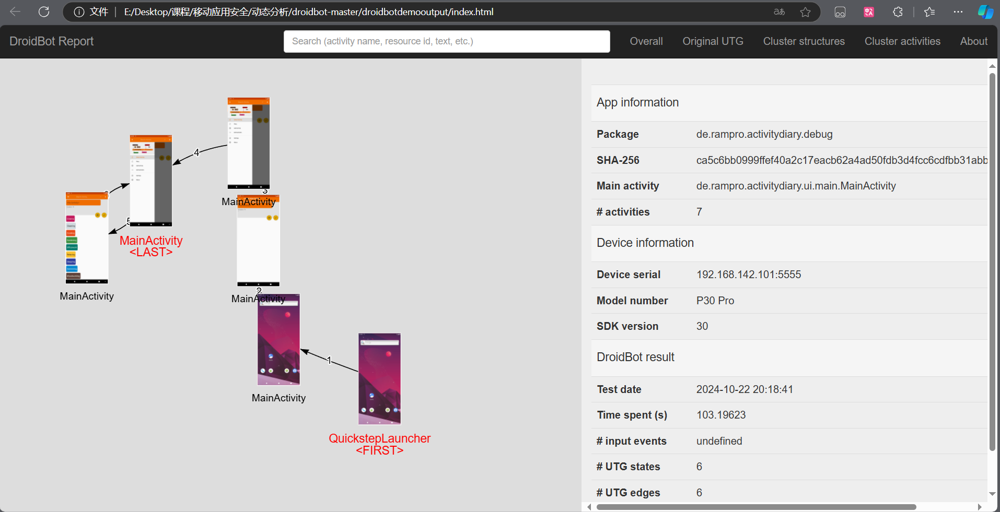
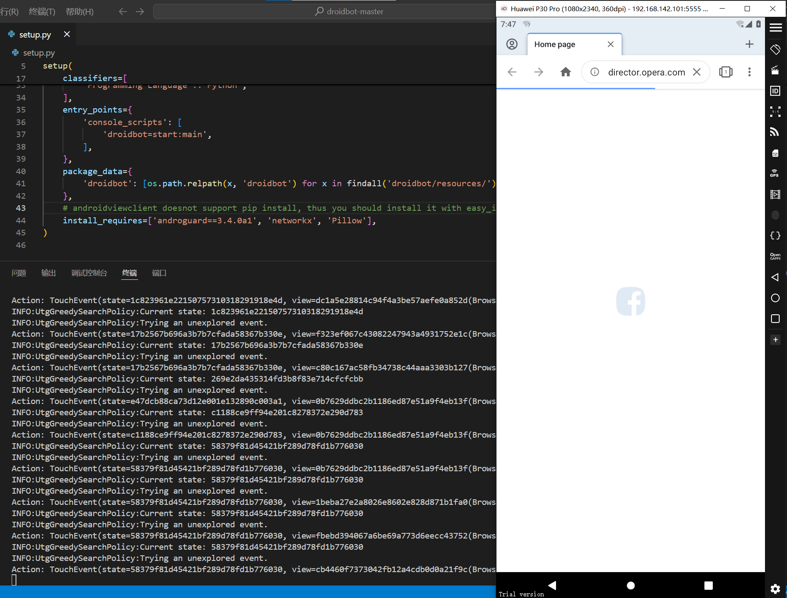
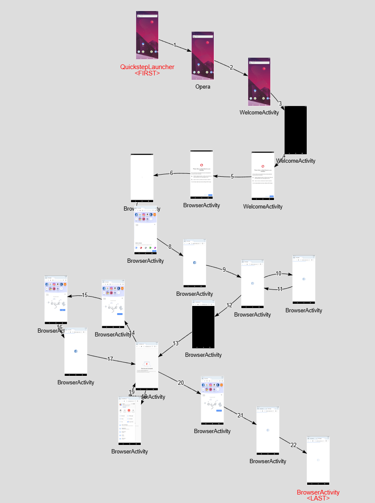
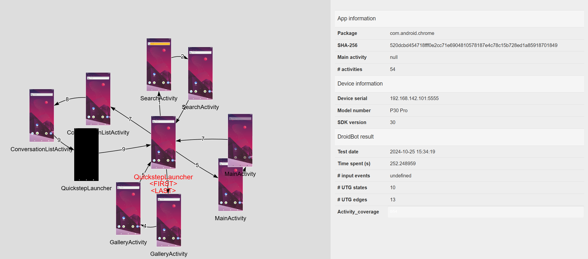
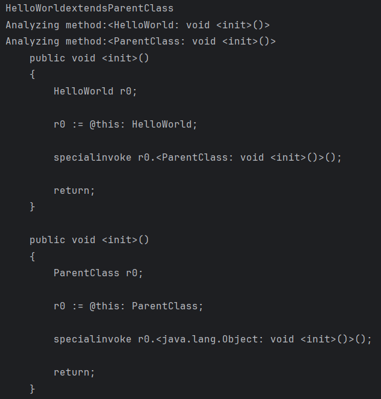

# 动态分析
# 实验目的
本实验的目的是通过动态测试工具 Droidbot 对 Android 应用进行自动化测试，验证应用在不同虚拟环境中的功能、稳定性和兼容性。实验将结合使用 Android Studio、Genymotion 虚拟机、Oracle VM VirtualBox 等工具，模拟真实设备上的操作，进行样例测试和具体应用的测试分析，从而探索应用的行为流程、控制流，并发现应用可能存在的安全问题。
# 实验环境
- Droidbot version1.0.2b1
- Android Studio Koala Feature Drop | 2024.1.2
- Oracle VM VirtualBox 版本 7.0.8 r156879 (Qt5.15.2)
- Genymotion Version 3.7.1
- 虚拟机版本：Huawei P30 Pro (Android 11.0 API 30)
# 实验过程
# 样例测试
Step 1 环境搭建
环境搭建步骤参考《APP 动态测试实验.pdf》。
安装 Python 和 Java
确保已安装 Python 和 Java，可以通过命令行（cmd）输入python和java -version来验证。配置 Android SDK
从 Android 开发者官网下载 Android Studio（无需安装 Android Virtual Device）。
将C:\Users\Administrator\AppData\Local\Android\Sdk\platform-tools目录添加到系统的 PATH 环境变量中。
通过命令行（cmd）运行adb命令验证配置。安装 Genymotion
在 Genymotion 官网注册账户，下载并安装 Genymotion 和 VirtualBox。
在 Genymotion 中选择手机机型（例如 Nexus 4），并配置 Android 版本（例如 Android 11.0）。验证 ADB 连接
确保虚拟机启动后adb能够识别设备。安装 Droidbot
从 Droidbot 的 GitHub 页面下载并解压 Droidbot。
在setup.py所在的文件夹中运行pip install -e .安装 Droidbot，完成后可通过droidbot -h验证。
Step 2 启动 Huawei P30 Pro 虚拟机
在 Genymotion 中点击启动按钮，启动 Huawei P30 Pro 虚拟机。
Step 3 启动动态测试
运行以下命令开始测试：
$ droidbot -a <path_to_apk> -o output_dir |
测试结果如图 1 所示。

Step 4 测试结果分析
测试结果存储在 output_dir 中，直接打开 index.html 即可查看测试结果，打开结果如图 2 所示。

在该页面可以查看 app 信息、设备信息、测试结果（测试时间、覆盖率等）。
# Opera 浏览器测试
从网上下载 x86 版本的 Opera 浏览器进行动态测试。
Opera 是一个强大而复杂的浏览器，此时使用 Opera-65.2.3381.61420x86.apk 版本进行测试，该 apk 可以从 https://mobile.softpedia.com/apk 下载获取。
运行测试界面如图 3 所示。

查看 Opera 浏览器的测试结果，可以得到控制流如图 4 所示。

# Chrome 浏览器测试
同样从 https://mobile.softpedia.com/apk 下载获取 x86 架构下的 Chrome 浏览器，名称为 Chrome-91.0.4472.134 x86 + x86_64.apk 。
Chrome 浏览器的测试结果如图 5 所示。

似乎是因为 API 版本的问题，只正常安装了 Chrome 浏览器的搜索栏，而没有完整安装整个浏览器，导致测试只显示了搜索栏，背景还是系统主界面。
# 心得与体会
通过本次实验，对 Android 应用的动态分析和自动化测试有了更深入的理解。整个测试过程让我体验到了 Droidbot 工具的便捷性及其在自动化测试中的重要作用。以下是我从实验中得到的主要体会：
实验中 Droidbot 结合 Android Studio、Genymotion 虚拟机和 VirtualBox 等多种工具，通过模拟真实设备环境来完成对应用的动态测试。这种组合在实际测试应用场景中表现出了高效的兼容性，尤其在调试和测试不同 Android 版本的应用时，减少了许多配置与环境兼容的困扰，使整个测试过程更加流畅。
Droidbot 能够自动模拟用户操作并覆盖应用的各个功能模块，不仅提高了测试的覆盖率，还降低了手动测试的工作量。在应用测试中，Droidbot 有效地捕获了应用的控制流和行为流程，为分析应用的稳定性和潜在的安全问题提供了较全面的数据支持。
由于 Android 设备种类繁多，操作系统版本各异，兼容性测试始终是一个复杂而重要的环节。本次实验通过多样化的虚拟设备配置，如 Huawei P30 Pro 和不同架构的应用测试，显著帮助我了解了如何在模拟环境中解决兼容性问题。然而，在配置虚拟设备与实际设备时，仍然存在一定的兼容性差异，因此在实践中还需注意不同虚拟设备的性能差异和 API 的适配性。
Droidbot 输出的详细报告为我们提供了应用的功能覆盖情况、测试时间和用户交互等信息，有助于分析应用的稳定性、性能和行为模式。在实际应用中，通过测试报告数据，能够快速识别出应用的潜在风险点，并为优化应用提供可靠的依据。实验让我意识到测试分析结果的重要性以及自动化工具在数据收集和分析上的优势。
综上所述，本次实验加深了我对 Android 应用动态测试的理解，提升了在虚拟环境中进行自动化测试的技能，同时认识到在应用测试中合理选择和搭配工具的重要性。
# 静态分析
# 实验目的
本实验的主要目的是通过静态分析工具 Soot 对 Java 程序和 APK 文件进行深入分析，掌握 Soot 的基本操作与配置流程。实验将演示如何利用 Soot 获取 Java 类的继承关系、方法调用链及其 Jimple 中间表示，从而为后续的静态污点分析和代码审计等安全分析奠定基础。同时，实验包含对 APK 文件的分析过程，识别应用程序中可能的安全隐患。
# 实验环境
- IntelliJ IDEA 2023.3.8 (Community Edition)
- Java 20 2023-03-21
- Java(TM) SE Runtime Environment (build 20+36-2344)
- Java HotSpot(TM) 64-Bit Server VM (build 20+36-2344, mixed mode, sharing)
# 实验过程
# 案例一
Step 1 环境搭建
创建 Maven 项目
在 IDEA 中创建 Maven 项目，并配置pom.xml文件，将 Soot 库作为依赖项添加。如果 Maven 没有自动下载依赖，可以右键pom.xml文件并选择 “Maven -> Reload project” 手动刷新。编写 Demo 程序
创建一个简单的 Java 类 Demo，例如一个HelloWorld类继承ParentClass类，以供 Soot 分析。Soot 初始化与配置
初始化 Soot，并设置其分析选项。具体的 Soot 配置选项可以参考官方文档。
分析任务通过 Soot 的不同阶段（Pack）和转换任务（Transform）进行配置，例如，使用Transform("jtp.myTransform", new BodyTransformer())注册一个转换任务到jtp阶段。使用PackManager.v().runPacks()运行所有已注册的转换任务。执行 Soot
在代码中调用 Soot 完成分析，或使用mvn package将项目打包为 jar 文件以生成可执行文件（需配置 Maven 编译器插件）。
Step 2 编写分析程序
静态分析的完整代码如代码段 1 所示。
public class Main { | |
public static void main(String[] args) { | |
// 1. 初始化 Soot 的配置 | |
initSoot(); | |
// 2. 加载并解析具体的类 | |
String className = "HelloWorld"; // 目标类的名称 | |
SootClass sootClass= Scene.v().loadClassAndSupport(className); | |
sootClass.setApplicationClass(); // 将其设置为应用类 | |
// 3. 打印该类的继承关系 | |
if (sootClass.hasSuperclass()) { | |
SootClass superClass = sootClass.getSuperclass(); | |
System.out.println(className + " extends " + superClass.getName()); | |
} else { | |
System.out.println(className + " does not extend any class."); | |
} | |
// 4. 设置 PackManager，注册自定义的转换任务 | |
PackManager.v().getPack("jtp").add(new Transform("jtp.myTransform", new BodyTransformer() { | |
@Override | |
protected void internalTransform(Body body, String phase, Map<String, String> options) { | |
// 打印方法的 Jimple 表示 | |
if (body instanceof JimpleBody) { | |
System.out.println("Analyzing method: " + body.getMethod().getSignature()); | |
System.out.println(body); // 打印 Jimple 表示 | |
} | |
} | |
})); | |
// 5. 启动 Soot 的分析任务，运行注册的任务 | |
PackManager.v().runPacks(); // 执行注册的分析 | |
} | |
private static void initSoot() { | |
G.reset(); // 清理全局状态 | |
Options.v().set_prepend_classpath(true); // 将 Java 类路径加入 Soot 类路径 | |
Options.v().set_allow_phantom_refs(true); // 允许 phantom 类引用 | |
Options.v().set_output_format(Options.output_format_jimple); // 设置输出为 Jimple 格式 | |
String classDir = "E:\\Desktop\\项目\\JavaLearning\\SootProject"; // HelloWorld.class 文件的目录 | |
Options.v().set_soot_classpath(classDir); | |
Options.v().set_process_dir(Collections.singletonList(classDir)); | |
Scene.v().loadNecessaryClasses(); // 加载必要的类到 Scene 中 | |
} | |
} |
Step 3 运行程序，分析结果
程序运行的部分结果如图 6 所示，以 HelloWorld extends ParentClass 为例分析其输出结果。

- 输出
HelloWorld extends ParentClass表明目标类HelloWorld继承自ParentClass。 - Soot 对
HelloWorld和ParentClass的构造方法进行了分析，并打印了它们的 Jimple 表示。
其中， HelloWorld 类的构造方法 <HelloWorld: void <init>()> 中的 r0 := @this: HelloWorld; 表示将当前对象 this 分配给本地变量 r0 。 specialinvoke r0.<ParentClass: void <init>()>(); 表示调用父类 ParentClass 的构造方法。
# 案例二
案例二核心代码如代码段 2 所示。
public class Main { | |
public static void main(String[] args) { | |
String appPath = "D:/sootshow/apks/0C4F1EE788C58BF01616B0EF0FE0DE4E1A27D9274C4ECE231C0CC8E513BDD7DC.apk"; | |
String androidJars = "D:/android-platforms/"; | |
String[] arguments = { | |
"-process-dir", appPath, | |
"-android-jars", androidJars, | |
"-ire", | |
"-pp", | |
"-allow-phantom-refs", | |
"-w", | |
"-p", "cg", "enabled:false" | |
}; | |
G.reset(); | |
APIPrintTransformer transformer = new APIPrintTransformer(); | |
Options.v().set_src_prec(Options.src_prec_apk); | |
Options.v().set_output_format(Options.output_format_none); | |
PackManager.v().getPack("wjtp").add(new Transform("wjtp.MethodFeatureTransformer", transformer)); | |
soot.Main.main(arguments); | |
} | |
} | |
public class APIPrintTransformer extends SceneTransformer { | |
@Override | |
protected void internalTransform(String phaseName, Map<String, String> options) { | |
Chain<SootClass> sootClasses = Scene.v().getApplicationClasses(); | |
for (SootClass sc : sootClasses) { | |
System.out.println("Class: " + sc.getName()); | |
for (SootMethod sm : sc.getMethods()) { | |
System.out.println("Method: " + sm.getName()); | |
if (sm.isConcrete()) { | |
try { | |
Body body = sm.retrieveActiveBody(); | |
if (body instanceof JimpleBody) { | |
System.out.println("Jimple Code for method: " + sm.getSignature()); | |
System.out.println(body); | |
} | |
} catch (Exception e) { | |
System.err.println("Error retrieving body for method: " + sm.getName() + " - " + e.getMessage()); | |
} | |
} | |
} | |
} | |
} | |
} |
程序的核心逻辑在 APIPrintTransformer 中。通过 Scene.v().getApplicationClasses 获取所有应用类，并对每个类输出其名称。如果方法是 concrete（具备具体实现），则获取其 JimpleBody（Jimple 表示的代码），成功获取 JimpleBody 后，打印方法签名和 Jimple 表示的代码。
程序的运行结果如图 7 所示。以方法 <com.google.android.gms.f.cz: int a(java.lang.String,com.google.android.gms.f.dd)> 为例分析其输出结果。

- 该方法名为
a，属于com.google.android.gms.f.cz类。程序首先将当前对象this赋值给局部变量r0，再将第一个参数（类型为java.lang.String）赋值给局部变量$r1，将第二个参数（类型为com.google.android.gms.f.dd）赋值给局部变量$r2。 - 程序调用
$r1（String 类型）对象的length()方法，获取字符串的长度并将其存储在$i0，调用$r2（com.google.android.gms.f.dd类型）对象的c()方法获取整数值，存储在$i1，最后将$i0和$i1的值相加并将结果存储在$i0中。
# 心得与体会
通过此次实验，我深入了解了静态分析工具 Soot 的强大功能和实际应用。在实验中，我们学习了如何使用 Soot 解析 Java 类的继承关系、方法调用链以及获取 Jimple 中间表示，为后续的代码分析打下坚实的基础。
在案例一中，通过获取类的继承关系，我们更好地理解了 Java 类之间的层次结构；而在案例二中，Soot 帮助我们深入分析了
APK 文件的方法逻辑，为应用的潜在安全隐患分析提供了支持。特别是 APIPrintTransformer 的实现，通过获取所有应用类及其方法的 Jimple 表示，我们能够清晰地看到程序的逻辑流程和关键变量的处理方式，为静态污点分析和代码审计提供了基础框架。
此次实验让我体会到静态分析在安全检测中的重要作用。通过构建的工具和流程，我们可以在无需运行应用程序的情况下，识别可能的漏洞和风险。这种 “白盒” 测试方法在安全分析和优化中具有高效和可靠的优势。